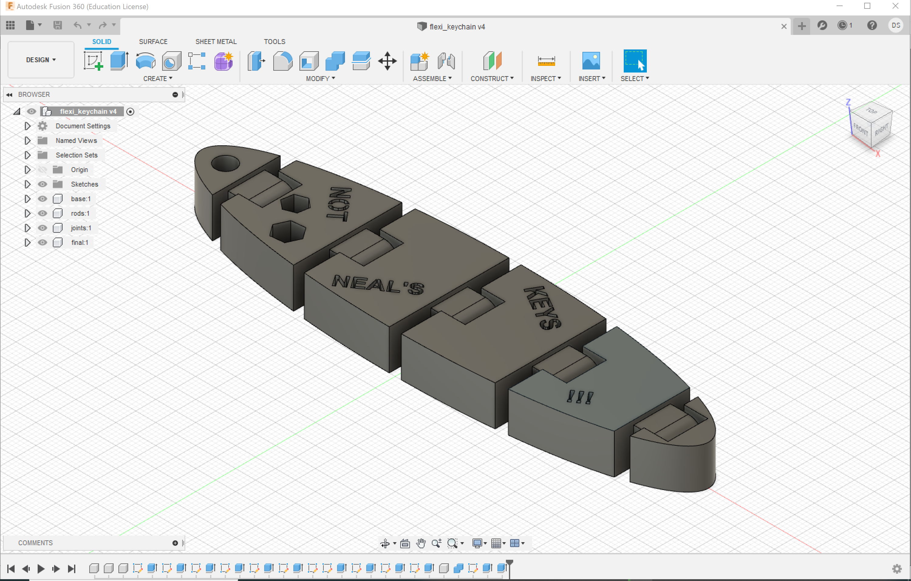

I want to build a flexi, i.e. a 3d printed object that bends!
Fig. 1 Flexi CAD

Step 2: CAD VIDEO
Following a tutorial, I laboriously created the sectioned file in Fusion 360. It was more advanced CAD than I had expected. Making the loops requires
more clearance that you might expect and you have to be vary carful to make sure the the sections don't leave any part of the model disconnected.
Fig. 2 Flexi CAD
Step 3: Printed Object
Behold my first flexi in all of its flexible glory!